RR REIMAGINED
Du kjenner låta.
Bare ikke sånn.
En kjent melodi. En annen følelse. Vi gir plass til versjoner som tilfører noe nytt.
Oppdag Reimagined ↗
Ta kontakt ↗FRA BØMLO. MED MUSIKKGLEDE.
Kjente låter. Nye opplevelser.
Du setter på Radio Rubben. Vi ordner resten.
MUSIKKEN PÅ RUBBEN
Favorittene du tar med deg.
Og låtene du ikke visste du savnet.
RR REIMAGINED
En kjent melodi. En annen følelse. Vi gir plass til versjoner som tilfører noe nytt.
Oppdag Reimagined ↗Favoritter som fremdeles treffer, uansett når du hørte dem første gang.
Nye bekjentskaper og lokale stemmer som fortjener å bli hørt.
HJEMME PÅ BØMLO
Radio Rubben er en lokal nettradio drevet av Thomas Magne Sellevold-Øystad. Her får musikken, menneskene og de lokale historiene plass.
Med røttene på Bømlo og ørene åpne for verden bygger vi en radio det er lett å bli glad i.
Har du en lokal historie? ↗AKTUELT & TANKER
SAMMEN OM LOKALRADIOEN
Har du en bedrift, en idé eller et lokalt engasjement?
La oss snakke om hva vi kan få til sammen.